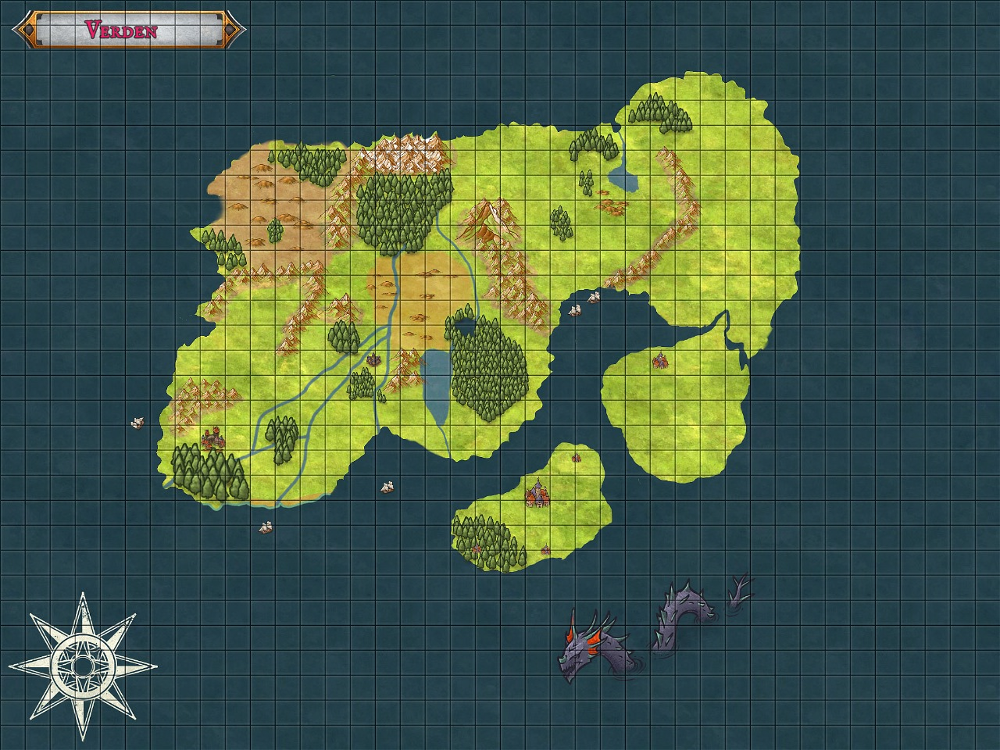

Introdução
Verden é o nome do continente fictício de minha autoria construído na intenção de mestrar um RPG no sistema de Tagmar 3.0. Neste sistema usa-se originalmente dados de 20 lados, conhecidos por D20, porém utilizando da regra de ouro (a regra que permite a hajam alterações no sistema objetivando a diversão do grupo como princípio) é possível que façamos alterações para encorajar a utilização dos demais dados: D4, D6, D8, D10 e D12. O mundo conta com um mapa desenvolvido com base em escala de 200 km/1cm, onde se trabalhará com divisões geopolíticas de países, nações e tribos, assim como abordará diversidade de culturas, incluindo línguas e dialetos como também cosmogonias e religiosidades distintas e ocasionalmente divergentes, o que poderá gerar conflitos de ideias e de visões de mundo até mesmo por parte dos PJ (personagens jogadores) e NPC’s (Personagens não jogadores) dando um sabor de “realidade” a campanha. Algumas dessas culturas são baseadas em povos reais como também em mitológicos (por exemplo anões, elfos e orcs) ou foram criadas de forma inteiramente fictícia à vontade do Mestre nos casos de necessidade para a construção da narrativa.
O mundo conhecido
O “mundo conhecido” é uma perspectiva proveniente de Königstal e se refere às descobertas do povo explorador da região de Tal der Könige durante o período das “Grandes Explorações” onde muitos empreendimentos nas áreas de Geografia e História ocorreram por parte das motivações dos monarcas em compreender potenciais inimigos ou aliados nas terras desconhecidas e também a abertura de possíveis rotas de comércio. Havia também o interesse por alguns destes monarcas que também descendiam da nobreza caelense (antigo império que será mencionado mais a frente) e tentavam buscar elementos que legitimassem sua posição de poder nas ruínas e vestígios das extensões do antigo império.
